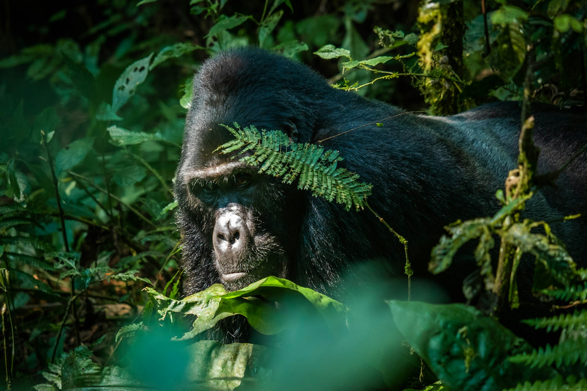

The Resplendent Journal · Conservation Journey
Where the
Virungas Rise.
How to shape a two-country gorilla journey with the right pace, preparation, conservation context and cultural depth.
The forest rewards
time and context.
A great-ape journey is strongest when it is not treated as a single sighting. The Virunga region asks for time: to understand the altitude and terrain, to settle into the forest rhythm and to appreciate the conservation work that makes each encounter possible.
Linking Rwanda and Uganda creates contrast as well as continuity. Gorilla landscapes, golden monkeys, volcanic highlands and local culture each add a different layer to the journey.
Preparation matters. Trek conditions, permits, transfers and lodge choices should be coordinated around the traveller rather than added as isolated bookings. The result feels calmer on the ground and leaves more attention for the reason you came.
Explore Across the Virungas